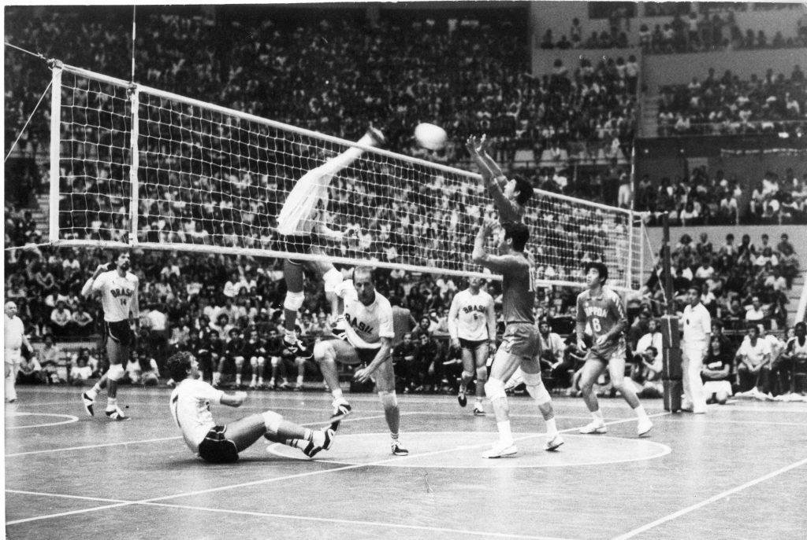
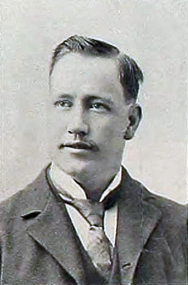
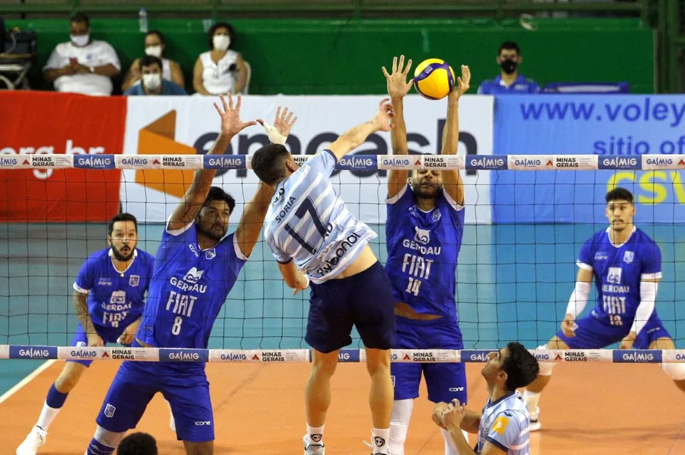
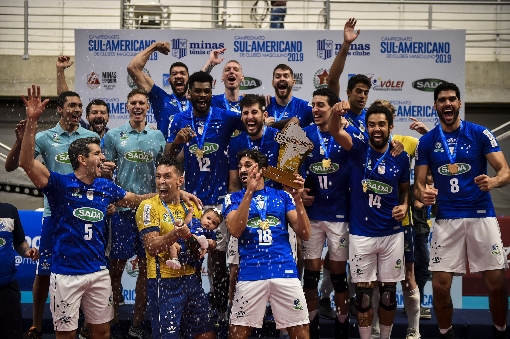
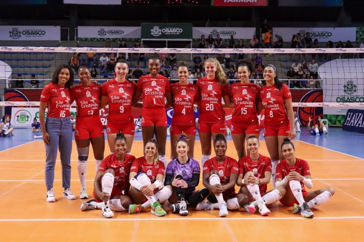
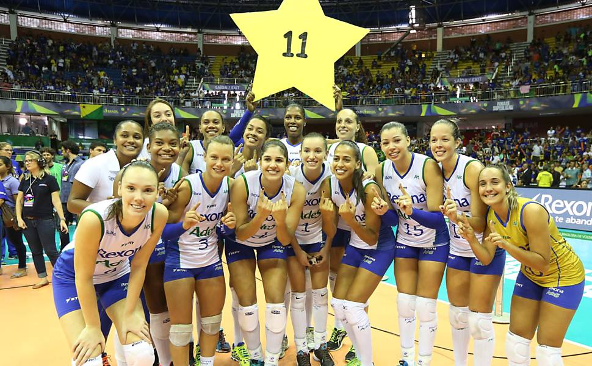

O vôlei foi criado em 1895 por William G. Morgan, um diretor de educação física da YMCA (Associação Cristã de Moços) em Holyoke, Massachusetts, nos Estados Unidos. Morgan buscava criar um esporte que fosse uma alternativa mais suave ao basquete, que havia sido inventado apenas alguns anos antes. Inicialmente chamado de "mintonette", o jogo era uma combinação de tênis, basquete e handebol. Morgan usou uma rede semelhante à do tênis, mas com regras que permitiam que a bola fosse golpeada com as mãos, sem contato físico direto entre os jogadores. A ideia era criar um jogo com menos contato físico, praticado em ambientes fechados, adequado para todas as idades e condições físicas. O nome "vôlei" foi adotado mais tarde, inspirado no ato de "volley", que descrevia o movimento de golpear a bola no ar. O esporte rapidamente se popularizou, tornando-se um dos principais esportes praticados em todo o mundo.
William G. Morgan, nascido em 23 de janeiro de 1870, foi um educador físico norte-americano e o criador do vôlei. Ele se formou pela Universidade de Springfield e começou a trabalhar na YMCA, onde teve a ideia de desenvolver um novo esporte para ser jogado em ambientes fechados. Motivado pela popularidade do basquete, mas buscando algo com menos contato físico, Morgan combinou elementos de vários esportes, como tênis, basquete e handebol, e criou o vôlei. Embora tenha inventado o esporte, ele não imaginava que ele se tornaria tão globalmente popular. Morgan também teve uma carreira significativa na educação física e no desenvolvimento de outros esportes, mas é mais lembrado por sua contribuição ao vôlei, esporte que, com o tempo, se espalhou para outros países e foi inclusivo em competições olímpicas. Ele faleceu em 1942, mas seu legado como o fundador do vôlei perdura até hoje.
Desde sua criação em 1895, o vôlei passou por uma grande evolução, tanto em suas regras quanto em sua forma de jogo. Inicialmente praticado apenas em academias da YMCA nos Estados Unidos, o esporte rapidamente se espalhou para outros países, ganhando popularidade em escolas, clubes e comunidades. As regras foram sendo ajustadas ao longo do tempo — por exemplo, o número de jogadores foi padronizado em seis por equipe, e a rotação passou a ser obrigatória. A introdução do sistema de rally point (ponto em todas as jogadas) deixou o jogo mais dinâmico e emocionante. Com o tempo, surgiram variações como o vôlei de praia, que se tornou um sucesso mundial. O vôlei foi incluído nos Jogos Olímpicos em 1964, consolidando seu status internacional. Hoje, é um dos esportes mais praticados do mundo, com ligas profissionais, torneios internacionais e milhões de fãs em todos os continentes.

O vôlei é jogado por duas equipes com seis jogadores cada,
separadas por uma rede no meio da quadra. O objetivo do jogo é fazer
a bola tocar o chão da quadra adversária, marcando ponto, enquanto
se evita que ela caia no próprio lado. Cada equipe pode dar no
máximo três toques na bola antes de enviá-la de volta ao outro lado,
sem que o mesmo jogador toque duas vezes seguidas. Os principais
fundamentos são o saque (para iniciar a jogada), a recepção, o
levantamento, o ataque (ou cortada), o bloqueio e a defesa.
No voleibol, os jogadores ocupam seis posições numeradas de 1
a 6, que giram no sentido horário a cada ponto ganho no saque. As
posições 1, 6 e 5 ficam no fundo da quadra (zona de defesa),
enquanto as posições 2, 3 e 4 ficam na frente (zona de ataque). Cada
jogador desempenha uma função específica: o levantador organiza as
jogadas, o oposto é responsável por ataques fortes do fundo e da
rede, os ponteiros atacam e recebem saques, os centrais bloqueiam e
atacam bolas rápidas no meio da rede, e o líbero, que usa uniforme
diferente, atua exclusivamente na defesa e não pode atacar nem
sacar.
O jogo é disputado em sets, e vence a equipe que ganhar três
sets de cinco, sendo que cada set vai até 25 pontos (com vantagem
mínima de dois pontos). O quinto set, se necessário, vai até 15
pontos. O vôlei exige trabalho em equipe, agilidade, estratégia e
precisão. Dentro do jogo, temos diversos tipos de rotação, para que
se encaixe melhor ao estilo de jogo do time,
No nosso mundo temos diversos times, muitos que são reconhecidos, e muitos que ninguém nem sabe que existe, mas aqui eu vou citar e explicar um pouquinho dos três maiores times do Brasil, que mais ganharam competições, medalhas, etc
O Sada Cruzeiro é o clube de vôlei masculino mais vitorioso do Brasil e da América do Sul. Fundado em 2006 com o patrocínio da empresa Sada, se associou ao Cruzeiro Esporte Clube e rapidamente se tornou uma potência.
Conquistas principais:O time é conhecido por sua estrutura profissional, alto investimento e por revelar e atrair jogadores de elite.
Tradicional time do vôlei feminino brasileiro, o Osasco surgiu nos anos 1990 e já teve nomes como Finasa, Sollys e Nestlé.
Conquistas principais:É conhecido por sua rivalidade com o time do Rio e por ser berço de grandes jogadoras da seleção brasileira. A torcida é apaixonada e ativa.
Com nomes como Rexona, Unilever e atualmente Sesc RJ Flamengo, o time do Rio de Janeiro é um dos mais vitoriosos da história do vôlei feminino brasileiro.
Conquistas principais:O clube é referência em formação de atletas, trabalho de base e competitividade, sendo liderado por Bernardinho, um dos maiores técnicos da história do vôlei mundial.
